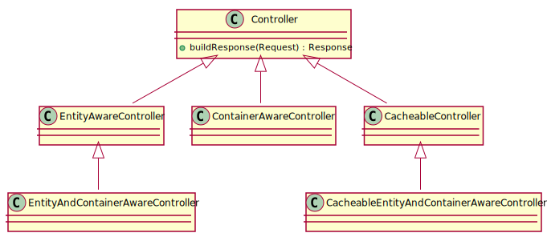
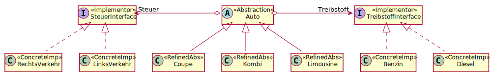
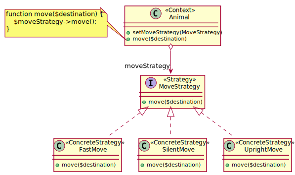
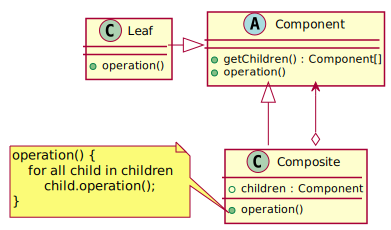
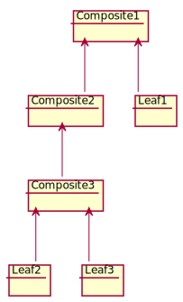
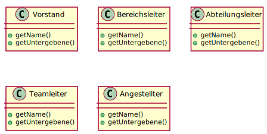

Design Patterns
ZooRoyal IT
Sebastian Knott
Absicht
Provide a unified interface to a set of interfaces in a subsystem. Facade defines a higher-level interface that makes the subsystem easier to use.
Folgen
Hands-on
Verschlüsselungsdienst kann Quelle verschlüsseln
Verschlüsselungsdienst kann für einen Algorithmus konfiguriert werden
Algorithmen : AES, DES, RSA
Absicht
Decouple an abstraction from its implementation so that the two can vary independently.
Hands-on
Bonusrunde Bridge + Strategy
 Hands-on
Modelliere den Zustand eines FernsehersAbsicht
Compose objects into tree structures to represent part-whole hierarchies. Composite lets clients treat individual objects and compositions of objects uniformly.
Struktur
Klassendiagramm
Objektdiagramm
Folgen
Hands-on
- Jeder Mitarbeiter soll die Menge aller Untergebenen zurückgeben
Anti-Pattern
Statischer Service Locator
Absicht
Define the skeleton of an algorithm in an operation, deferring some steps to subclasses. Template Method lets subclasses redefine certain steps of an algorithm without changing the algorithm'sstructure.
Absicht
Convert the interface of a class into another interface clients expect. Adapter lets classes work together that couldn't otherwise because of incompatible interfaces.
Struktur
Es gibt zwei Herangehensweisen an dieses Pattern.Folgen
Fazit

An anti-pattern is a common response to a recurring problem that is usually ineffective and risks being highly counterproductive.